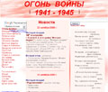

главная  о проекте
о проекте
главная |

Личность в историикраткая энциклопедияПроект «Личность в истории» посвящен людям — современникам грандиозных исторических событий, носителям редких качеств или людям, взгляды которых опередили их время. |
|||||
Коротко |
Статьи |
Персоналии |
Литература |
||
О проекте |
|||||
|
«Личность в истории» представляет собой попытку создания универсальной краткой энциклопедии, посвященной самым разным сторонам человеческой истории и культуры. Здесь представлены биографии выдающихся личностей за всю историю человечества. Авторы не ограничиваются какой-то определенной эпохой или цивилизацией. Речь может идти о Древнем мире или Киевской Руси, о цивилизации Майя или средневековой Японии. Нас интересуют полководцы и правители, революционеры и поэты, писатели и ученые. Кроме того нас интересуют и обычные люди, которые жили одновременно с Клеопатрой или Наполеоном Бонапартом, в их тени, являлись участниками грандиозных событий, носителями редкого таланта, ума или доблести, люди, чьи имена потомкам почти или совсем ничего не говорят. На сайте помещены списки литературы, посвящение многим вопросам истории, науки и культуры. В разделе «Коротко о разном» в сжатой, лаконичной манере, представлена информация, посвященная любым эпизодам истории, научным открытиям или философским проблемам. Кроме того, мы сообщаем о книгах, показавшихся нам интересными и даем их развернутый анализ, а также предлагаем вниманию читателей сайта фрагменты интересных статей и книг на разнообразные темы. |
|||||
Программа сотрудничества |
|||||
|
Если у Вас есть свои проекты, посвященные аналогичной тематике, наработки или просто идеи, мы, авторы сайта «Личность в истории», предлагаем Вам обмен материалами или ссылками. По вопросам сотрудничества, а также с любыми предложениями, вопросами или советами обращайтесь по адресу: tabularium@yandex.ru Васильев Антон Евгеньевич, |
|||||
Партнёры |
|||||
|
|||||
|
 | ||||
|
|||||
|